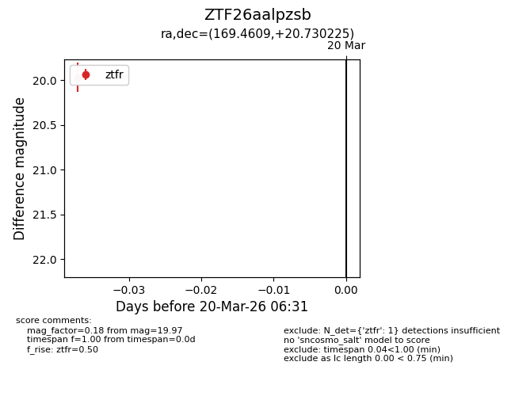
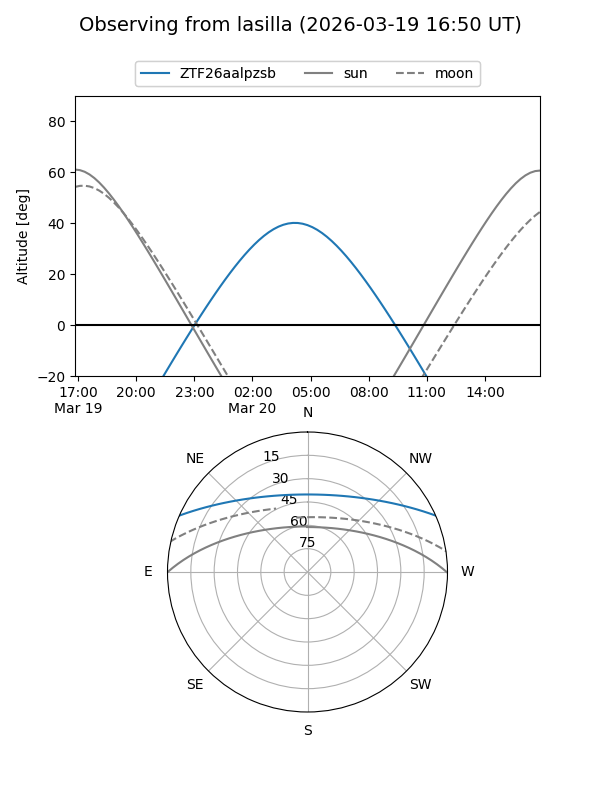
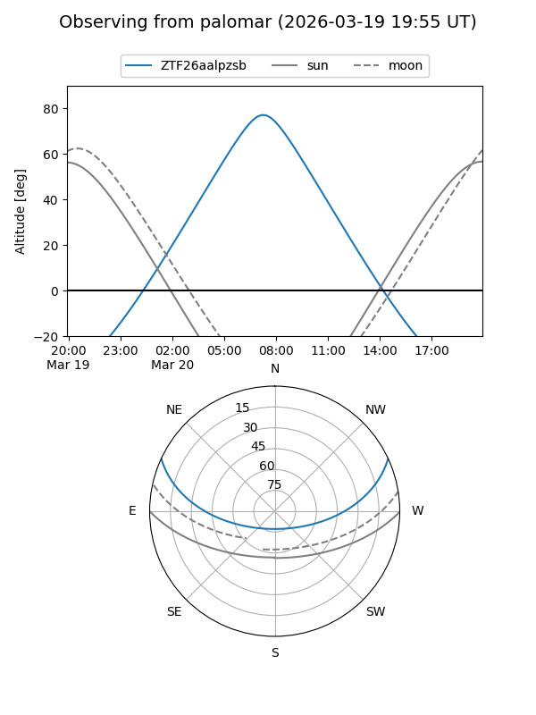

ZTF26aalpzsb
Target ZTF26aalpzsb at 2026-03-20 06:33
Aliases and brokers:
FINK: link
Lasair: link
ALeRCE: link
alt names
ZTF26aalpzsb (ztf,fink_ztf)
Coordinates:
equatorial (ra, dec) = 169.4609,+20.73023
equatorial (HMS+DMS) = 11:17:50.62,+20:43:48.81
galactic (l, b) = (224.5503,+67.71691)
Flags:
Photometry:
last ztfr=19.97
1 ztfr detections
Lightcurve

Visibility


Additional plots